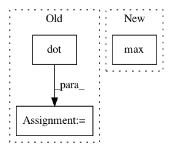

70e4855f5608c4481dfffd5f762e310d631d06c3,test_model_CAM.py,,returnCAM,#Any#Any#Any#,45
Before Change
nc, h, w = feature_conv.shape
output_cam = []
for idx in class_idx:
cam = weight_softmax[class_idx].dot(feature_conv.reshape((nc, h*w)))
cam = cam.reshape(h, w)
cam = cam - np.min(cam)
cam_img = cam / np.max(cam)
cam_img = np.uint8(255 * cam_img)
output_cam.append(imresize(cam_img, size_upsample))
return output_cam
After Change
output_cam = []
for idx in class_idx:
cam = (weight_softmax[class_idx]@feature_conv.view(nc, h*w))
cam.add_(-cam.min()).div_(cam.max()).mul_(255)
cam = F.interpolate(cam.view(1,1,h,w), size=size_upsample, mode="bilinear",
align_corners=False).squeeze()
cam = np.uint8(cam.numpy())
In pattern: SUPERPATTERN
Frequency: 3
Non-data size: 3
Instances
Project Name: metalbubble/moments_models
Commit Name: 70e4855f5608c4481dfffd5f762e310d631d06c3
Time: 2020-10-09
Author: mmonfort@mit.edu
File Name: test_model_CAM.py
Class Name:
Method Name: returnCAM
Project Name: scipy/scipy
Commit Name: 5ded2b734290836869a549a7c0e4be7d46d4bde4
Time: 2019-08-08
Author: andrew.knyazev@ucdenver.edu
File Name: scipy/sparse/linalg/eigen/lobpcg/lobpcg.py
Class Name:
Method Name: _b_orthonormalize
Project Name: nipy/dipy
Commit Name: ba8bfb474b108565ac8f77544d0aeb8b1a9a0fdc
Time: 2011-02-09
Author: garyfallidis@gmail.com
File Name: dipy/reconst/dandelion.py
Class Name: SphericalDandelion
Method Name: spherical_diffusivity